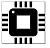

\'SOO-shahn ti-WAH-ree'\
Computer Engineer St.Cloud,MN
tiwarisusan@gmail.com (612)-442-5408
Skills
Programming Languages

Software Applications
Microsoft Office Visual Studio
Keil Uvision
Eclipse
MPLAB X LtSpice
PSpice
CCS C Compiler
Xilinx Vivado
Hardware Devices
Oscilloscope Logic Analyzer
Activities and Involvement
Marketing and Volunteer Coordinator
Atwood After Dark Comittee, (UPB)
Aug 2016 - Mar 2017
Volunteer Coordinator
Nepalese Student Association
Aug 2016 - Mar 2017
Scholarships
Academic and Cultural Sharing Scholarship
Aug 2016 - Present
Bachelor of Science in Computer Engineering GPA: 3.29 (unofficial transcript)
Program nationally accredited by the Engineering Accreditation Commission of ABET